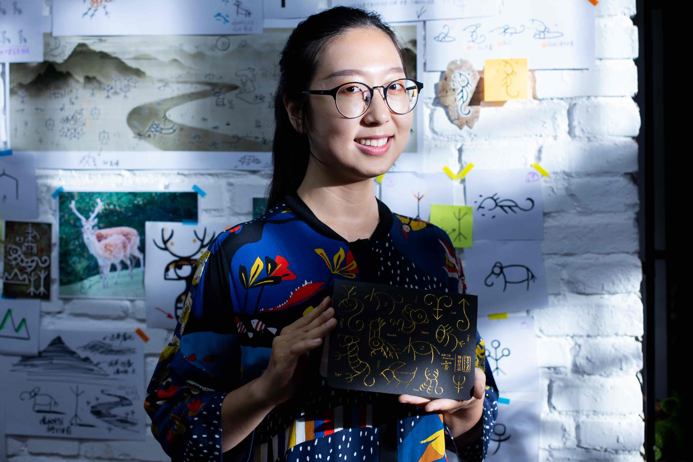
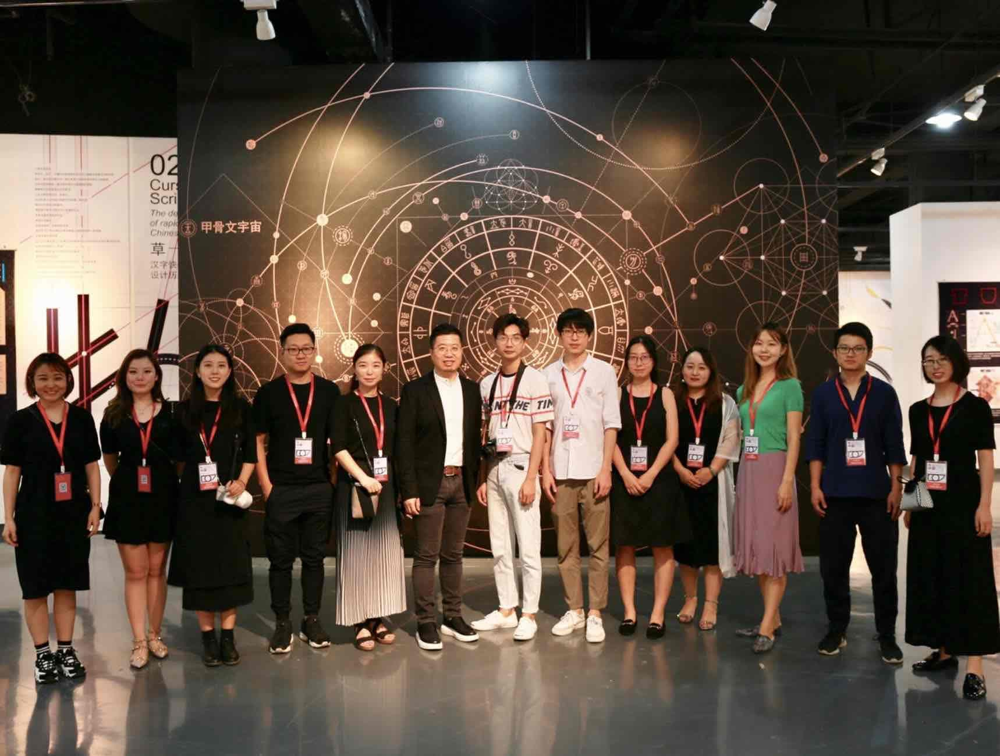
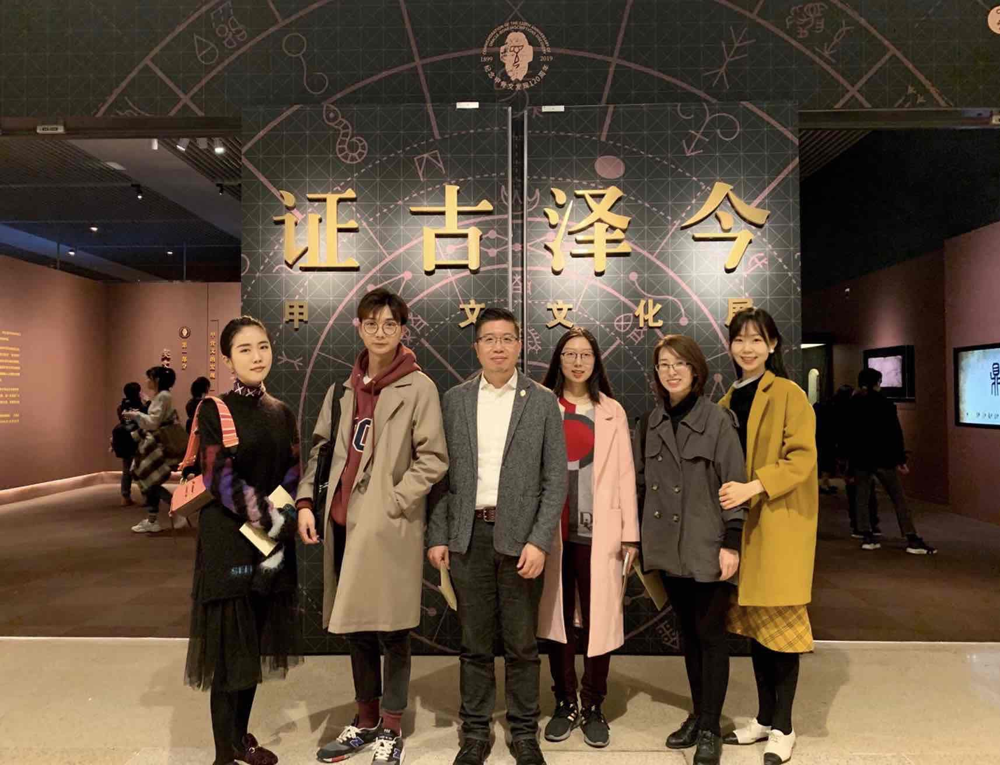
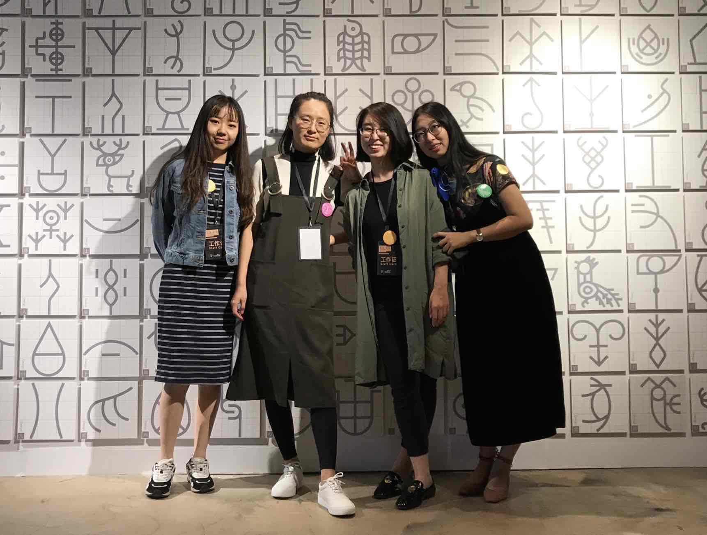
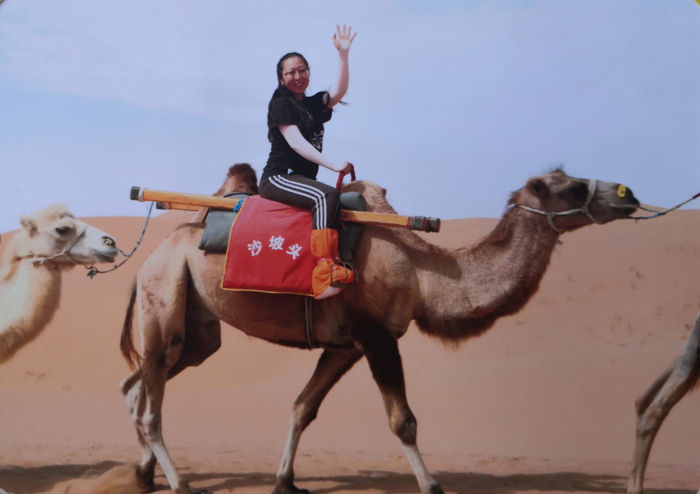

I’m Yifan, a visual communication designer and researcher with a Ph.D. from Tsinghua University. Over the past decade, I’ve focused on how intelligent technologies can foster new forms of visual interaction. My design philosophy centers on clarity, usability, and joy. I believe in system thinking and aim to create experiences that are simple, consistent, and impactful.




